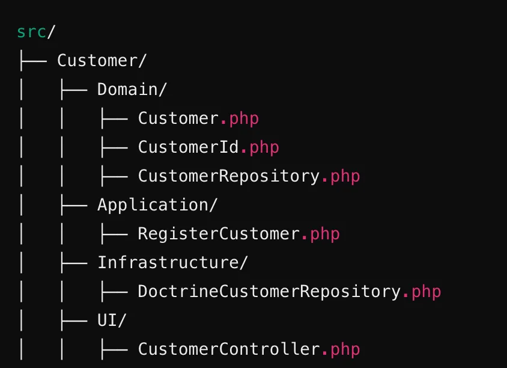
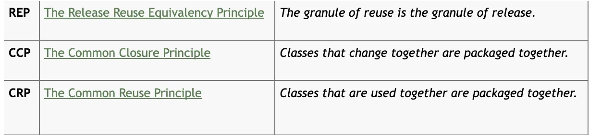
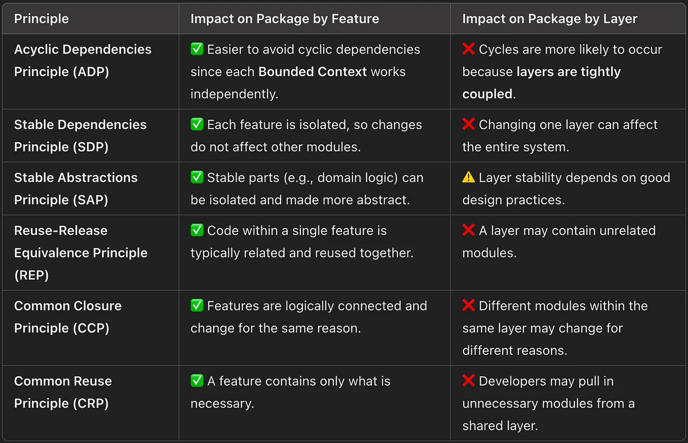
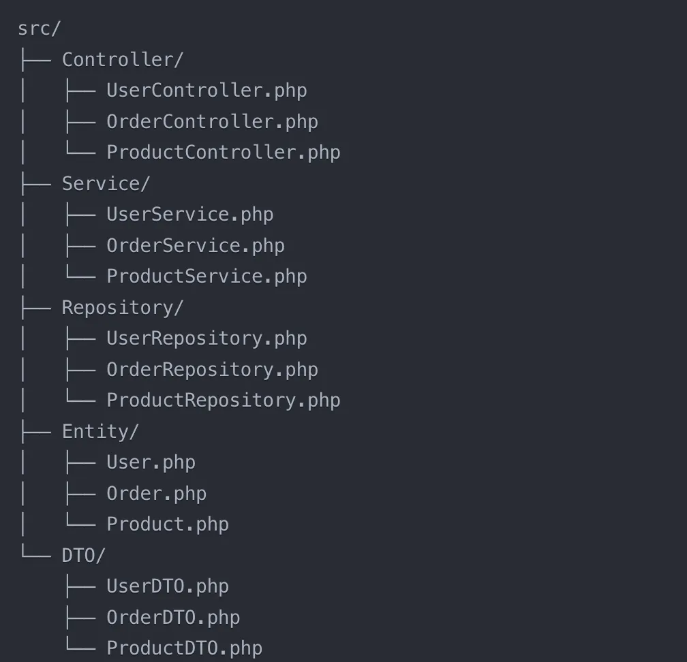
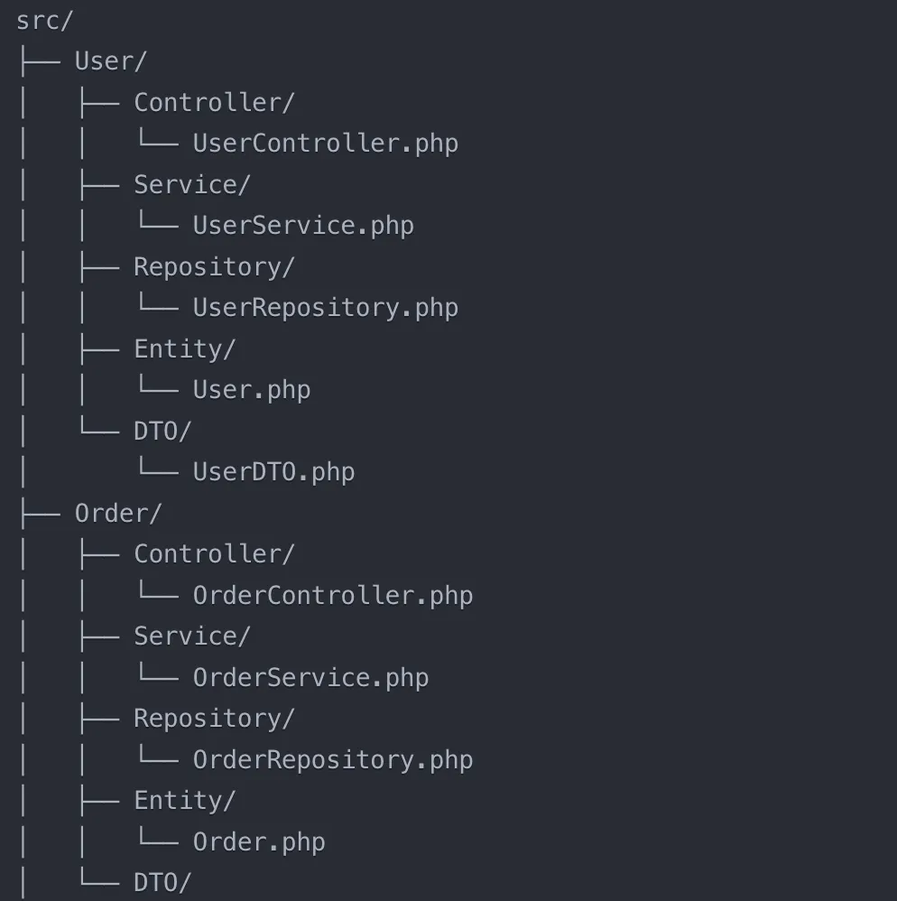
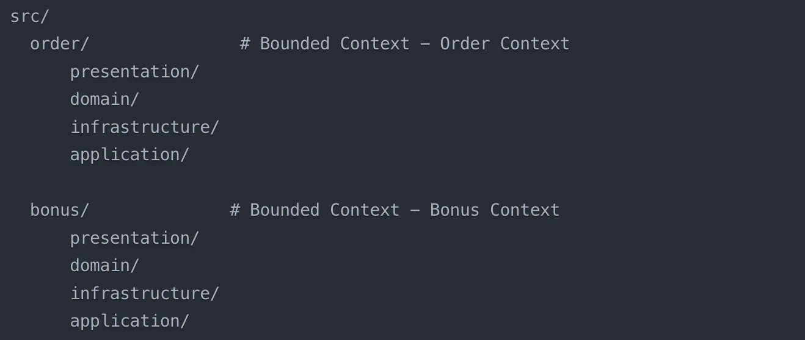
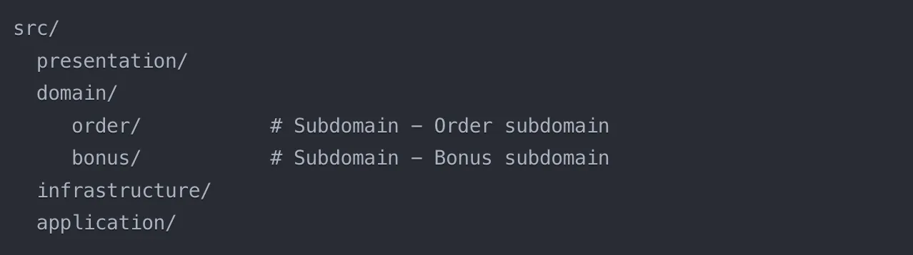

Introduction
In the previous article, “How to Organize Application Structure,” various approaches to code organization were discussed, including monolithic architecture, layered architecture, and clean architecture principles. I emphasized the importance of a clear code structure that facilitates understanding, implements new features, and reduces the likelihood of errors. Special attention was given to criteria for clarity, such as clear purposes for files and folders, separation of logic by modules or functional areas, the use of self-documenting names, and adherence to coding standards. The problems arising from unstructured code organization were also examined, including difficulties in navigation, lack of modularity, and violations of SOLID and GRASP principles.
In this article, we will continue this topic by focusing on a comparison of two approaches to code organization: Package by Feature and Package by Layer. We will explore in detail how each of these methods impacts project structure, code maintainability, and scalability.
Real Life Examples
Example №1: Building a City
Imagine you are building a city. This city has houses, schools, shops, and parks. You can organize the city in different ways:
- Package by Layer — All similar buildings are grouped in one area: All shops are in one district, all houses in another, and all schools in a third. Would you want to live in such a city?
- Package by Feature — Districts where everything you need is located nearby: In one district, there are houses, shops, and schools — everything the district's residents might need.
Example №2: Organizing Clothes in a Wardrobe
Imagine you are organizing clothes in a wardrobe. You can arrange them in different ways:
- Package by Layer — All T-shirts go on one shelf, all pants on another, and all socks in a separate drawer.
- Package by Feature — Organizing clothes by activity. Everything for swimming is in one place (swimsuit, towel, goggles), and everything for school is in another (textbooks, notebooks, pens).
Example №3: Organizing a Restaurant Kitchen
Imagine you have a restaurant with several chefs, and an order comes in for pizza, salad, and dessert. You have many ingredients and tools: flour, cheese, tomatoes, cucumbers, eggs, a mixer, knives, cutting boards, and so on. You need to organize everything so that cooking is convenient.
- Package by Layer — Similar to organizing everything by type, regardless of which dish it’s needed for. For example: Box “All Vegetables”, Box “All Tools”, Box “Spices”. If you’re making pizza, you need to take the box with vegetables, the box with tools, the box with dry ingredients, and the box with dishes. This takes a lot of time and effort. You might get confused because everything is scattered across different boxes.
- Package by Feature — Organize everything needed for each dish into separate boxes or zones in the kitchen. For example: Box “Pizza”, Box “Salads”, Box “Desserts”. You don’t get confused because everything for each dish is in one place. The chefs don’t get in each other’s way.
Example №4: Packing a School Backpack
Imagine you need to pack a school backpack.
- Package by Layer — Putting all textbooks together, all notebooks together, and all pens together. It’s convenient when you need to find all the textbooks, but it’s inconvenient when packing for specific subjects.
- Package by Feature — Packing everything for math separately (textbook, notebook, ruler) and everything for art separately (sketchbook, paints, brushes). It’s convenient when preparing for a specific lesson, but harder to find all textbooks at once.
How Do Programming Paradigms Affect Code Organization?
Before diving into code organization, it’s important to understand that different programming paradigms can influence the choice between Package by Layer and Package by Feature.
Object-Oriented Programming (OOP) and Code Organization
OOP is a paradigm where a program is built around objects, which are instances of classes. The main principles of OOP include:
- Encapsulation: Hiding the internal state of an object and providing access to it only through methods.
- Inheritance: The ability to create new classes based on existing ones, allowing code reuse.
- Polymorphism: The ability of objects of different classes to be treated as objects of a single class.
- Abstraction: Simplifying complex systems by modeling classes that reflect only essential characteristics.
OOP revolves around objects that contain state (data) and behavior (methods). This leads to the following implications:
Package by Feature
- Supports OOP principles such as encapsulation and implementation hiding.
- Classes related to a single functionality are grouped together, making the code easier to understand and maintain.
- Allows encapsulation of all logic related to specific functionality within a single package.
- Promotes highly cohesive modules with low coupling, aligning with SOLID principles.
- Easier to adhere to the Single Responsibility Principle (SRP).
- Works better with DDD (Domain-Driven Design) as it allows grouping objects related to a single business feature in one place.
Package by Layer
- Often found in classic monolithic applications, where layers (controllers, services, repositories) are separated.
- Objects and classes responsible for different aspects of a single function are also separated into different layers.
- Can make it harder to apply OOP principles such as polymorphism, leading to more complex and tangled relationships between objects.
In summary, Package by Feature aligns more naturally with OOP principles, promoting encapsulation, cohesion, and maintainability, while Package by Layer can introduce complexity and reduce clarity in object interactions.
Functional Programming (FP) and Code Organization
FP is a paradigm where a program is viewed as a set of functions that take input and return results. It is based on the ideas of pure functions, immutability, and composition. The main principles of FP include:
- Pure Functions: Functions that have no side effects and return the same result for the same input.
- Immutability: Data is not changed after creation; instead, new data is created.
- Higher-Order Functions: Functions that can take other functions as arguments or return them.
- Recursion: Often used instead of loops for data processing.
Functional programming emphasizes what the program does rather than how it does it. This leads to a different approach to code structure:
Package by Feature
- Works well with FP, as functionality is grouped around specific tasks or domain areas.
- Allows the creation of modules that encapsulate logic related to a specific function.
- Functions that work with the same data or solve the same task are located in one place, making it easier to compose and reuse functions.
- Promotes the creation of pure functions, as each functionality is isolated and does not depend on the global state.
Package by Layer
- Contradicts the principles of FP, as it separates code by technical criteria rather than functionality.
- Can make function composition more difficult and scatter logic across different layers.
- Functional code may become less readable if functions related to the same task are located in different packages.
In summary, Package by Feature aligns better with FP principles, promoting modularity, reusability, and clarity, while Package by Layer can introduce unnecessary complexity and reduce readability in functional programming.
What Do the Experts Say?
Eric Evans in “Domain-Driven Design”
Eric Evans introduces the four-layer architecture (Layered Architecture), which helps separate business logic, infrastructure, user interface, and data access. However, he does not insist on a specific directory structure, but rather emphasizes the importance of separating areas of responsibility.
DDD does not dictate a rigid package structure. It is important that the code reflects the context boundaries and the domain model.
— Evans, DDD, Chapter 4 “Isolation of Domain Logic”
Four layers according to Evans:
- The Domain Layer should be isolated from infrastructure. (Entities, Value Objects, Aggregates)
- The Application Layer manages business processes but does not contain business logic. (Use Cases)
- The Infrastructure Layer implements data storage, APIs, and integrations.
- The User Interface Layer is responsible for user interaction.
Evans does not prescribe exactly how the file structure should be organized. He provides a concept of separating responsibilities but does not give specific rules for naming folders. Additionally, Evans emphasizes the importance of Bounded Context and organizing code by contexts, not just by layers.
“When a large system is divided into multiple Bounded Contexts, each has its own domain model and logic. The code must be organized to reflect the boundaries clearly.”
— Eric Evans, Domain-Driven Design, Chapter 14: Maintaining Model Integrity
This hints at Package by Feature, where code is split by features/contexts (Bonus/, Customer/, Order/) rather than just layers (Domain/, Application/, Infrastructure/).
Vaughn Vernon in “Implementing Domain-Driven Design”
Vaughn Vernon also supports the separation of layers, but he takes a more flexible approach to code organization. In his book “Implementing DDD”, he even mentions Package by Feature as a possible option!
Bounded Context and code organization:
“Bounded Context is a central pattern in Domain-Driven Design. It defines the boundaries within which a particular model applies and is consistent. Organizing code around Bounded Contexts, rather than just technical layers, helps to maintain clarity and alignment with the business domain.”
“A Bounded Context is a logical boundary. The application of architectural layers within a Bounded Context is a choice, not a requirement. The key is to keep the domain model pure and expressive within that boundary.”
— Vaughn Vernon, Implementing Domain-Driven Design, Chapter 2: Bounded Contexts
Code structure and possible approaches:
“Organizing code strictly by layers often leads to an artificial separation of concerns. Instead, consider grouping code by domain concepts first, and then decide whether layers are needed inside each context.”
— Vaughn Vernon, Implementing Domain-Driven Design, Chapter 4: Strategic Design with Bounded Contexts
What does it say about the structure of the code?
“DDD does not dictate a rigid package structure. What’s important is that the code reflects the boundaries of the context and the domain model.”
— Vernon, IDDD, Chapter 2 “Context Boundaries”
He acknowledges that Package by Feature can be used within DDD and recommends grouping code by Bounded Context, and layers can be used within each context. He suggests a hybrid approach between Package by Layer and Package by Feature.
Carlos Buenosvinos, Christian Soronellas, and Keyvan Akbary in “DDD in PHP”
The book also touches on the issue of code organization, including models, layers, and Bounded Context. The authors of the book are guided by the principles of Evans and Vernon, but with adaptation to PHP.
Prefer for Bounded Context and Package by Feature
“A good PHP architecture organizes the code around domain concepts, rather than technical layers. Each context should have its own domain logic, independent from infrastructure concerns.”
— PHP in DDD, Chapter 6: Organizing Code with Bounded Contexts
Supports using Bounded Context and Package by Feature, not just layers. Code inside the Domain Layer should hide implementation details and work through Use Cases.
Layers are used flexibly
“Layered architecture is a useful tool, but it should not dictate how to structure your PHP application. The most important thing is to keep business logic separate from infrastructure.”
— PHP in DDD, Chapter 10: The Role of Application and Infrastructure Layers
Uncle Bob’s in Clean Code
Take a look at Uncle Bob’s Package Design Principles. He explains the reasons and motivations behind those principles, which I have elaborated on below.
The next three package principles are about package cohesion, they tell us what to put inside packages:
How does this relate to Package by Feature and Package by Layer?
- Uncle Bob’s principles show that Package by Feature is a more flexible and scalable approach because:
- It avoids cyclic dependencies.
- Each feature can be changed independently.
- It groups code by meaning, not by technical layers.
- However, if you use Package by Layer, you need to manage dependencies very carefully to avoid violating the principles!
- Bounded Context as the foundation (as emphasized by all three authors).
- Package by Context + Package by Layer inside each context.
- Flexible use of layers (separate the domain from infrastructure, but avoid overcomplicating).
- The domain model is crucial (Entity, Aggregate, Value Objects).
- DDD does not dictate the folder structure, but it does require a clear separation of responsibilities.
- The main principle: DDD → Contexts first, then layers, not the other way around!
Use Cases in Clean Architecture and Package by Feature
Use Cases are one of the key elements of Clean Architecture, responsible for handling business logic. Package by Feature is a way of organizing code where all files related to a single functionality (feature) are stored in one folder. These two approaches complement each other perfectly:
- Use Cases allow you to isolate business logic.
- Package by Feature makes the codebase more modular and understandable.
- Together, they create a clean, maintainable, and scalable structure for your application.
Use Cases and Package by Feature do not contradict each other. On the contrary, they work exceptionally well together, as both aim to improve code structure.
- Use Cases help isolate business logic and make the code testable.
- Package by Feature allows storing all code related to a feature in one place, making it modular.
- By combining these approaches, you get the best of both worlds. As a result, you achieve:
- Flexible code grouped by features, which can be easily moved and tested independently.
- Maintainable and scalable code that is easier to support and extend.
- A developer-friendly codebase where it’s simpler to navigate and work with the code.
- This combination leads to a clean, modular, and efficient architecture.
When to Use What?
In PHP projects, both approaches — Package by Feature and Package by Layer — are used depending on architectural decisions and project scale.
Package by Layer is suitable when:
- You have a small application.
- There are many new developers on the team.
- You need a simple, clear structure.
- Functionality is tightly interconnected.
Package by Feature is suitable when:
- You have a large application.
- Different teams are working on different features.
- Functionality is loosely coupled.
- Module independence is important.
- Planning to switch to microservices
- The project is large with clear domain boundaries
- The team is familiar with DDD
- Using your own architecture or modular frameworks
🎯 How to organize code?
Let’s look at them with examples.Package by Layer (Organization by Structure Layers)
This approach separates code by responsibility levels:
- Controller — Handles HTTP requests.
- Service — Contains business logic.
- Repository — Manages database interactions.
- Entity — Represents data models.
This structure organizes code based on its technical role, making it easier to manage layers but potentially harder to navigate features.
Package by Layer (Organization by Architecture Layers)
Cons:
- The logic of one feature is spread across different folders.
- When adding a new feature, you have to change several layers.
Package by Feature
Here the code is grouped by features (work scenarios), not by layers.
DDD and Code Organization
In my experience, I have encountered several approaches. All approaches are technically viable and support tactical patterns. In practice, a hybrid approach is often used, combining the best aspects of Package by Feature and Package by Layer.
Approach №1: Domain-Oriented Layers
A large context can naturally lead to components, which themselves might be organized into layers. However, deep component nesting should be avoided. If you observe excessive nesting, it’s time to rethink the component boundaries and architecture.
From the perspective of DDD and Layered Architecture, this approach is preferable. Here’s why:
- Bounded Contexts: The first approach better reflects the concept of Bounded Contexts in DDD. Each functional area (e.g., order, bonus) represents a separate bounded context. This ensures better isolation of business logic and reduces coupling between different domains.
- Modularity and Scalability: With the first approach, it’s easier to add new functional modules. Each module contains all necessary layers and can evolve independently. It’s simpler for multiple teams to work on different modules.
- Maintenance and Navigation: It’s easier to locate all code related to a specific functionality. The boundaries of each module are clearer. There’s less risk of accidentally mixing code from different domains.
- Adherence to DDD Principles: It better reflects the strategic design of DDD. Boundaries of aggregates and domain services are more visible. It’s easier to control dependencies between modules.
Approach №2: Layers with Contexts Inside the Domain
This approach assumes that domain models are separated by contexts, but the remaining layers can be shared across the entire application.
Advantages:
- Reduced Code Duplication: If the infrastructure or presentation layers are truly common across your application, sharing them can minimize code redundancy. This means you write the code once and reuse it in multiple places.
- Simplicity for Small Projects: For smaller projects or monolithic applications with a single entry point, a shared layer approach can be easier to manage initially due to its apparent simplicity.
Disadvantages:
- Unwanted Dependencies: Shared application and infrastructure layers can lead to unwanted dependencies between bounded contexts. For example, a change in the infrastructure to support the “Bonus” context might inadvertently affect the “Analytical” context.
- UI Separation Challenges: A shared presentation layer can make it difficult to separate the user interface by context if needed in the future. This can become problematic as your application grows and requirements evolve.
- Violation of Bounded Context Autonomy: Sharing layers violates the principle of bounded context autonomy, as it increases coupling between different parts of the system. This makes it harder to evolve individual contexts independently.
- Code Mixing: If the application and infrastructure layers lack subdirectories for each context, the code within them can become mixed and disorganized, making maintenance a nightmare.
- Navigation Difficulties: As the project grows, navigating the codebase becomes increasingly challenging. This increases the risk of accidentally violating domain boundaries and introducing unintended side effects.
Approach №3: Layers with Subdomains Inside the Domain
This approach suggests that domain models are separated by subdomains, but the remaining layers can be shared across the entire application.
In DDD, subdomains are logical parts of the main domain that can be separated to simplify modeling. However, within a single bounded context, subdomains usually do not require strict physical separation at the code level unless there are explicit context boundaries between them. This decision is left to the developer.
Pros:
- Compactness: For a small microservice with a single bounded context, this structure is simple and clear. All layers are at the same level, which aligns with the classic DDD approach (layered architecture: presentation → application → domain → infrastructure).
- Subdomains in the domain: Separating order and bonus within the domain is convenient for the logical grouping of entities and business logic. This is particularly useful if the subdomains have different business rules or aggregates but still operate within a single context.
- Suitable for microservices: If the microservice is small, there is no need to complicate the structure with excessive nesting or separation into modules. One bounded context = one microservice is a typical approach in DDD when transitioning to a microservice architecture.
Cons:
- Mixing subdomains: If order and bonus have overlapping entities or dependencies, their physical separation within the domain may be redundant. In a small project, it might be possible to avoid subdirectories and simply separate the code logically (e.g., through class names or packages within a single domain).
- Limited scalability: If in the future order or bonus grows into separate bounded contexts (e.g., they need to be split into different microservices), the current structure will require reorganization. In such a case, the first option from your previous question (with separate modules for each context) would be more flexible.
- Ambiguity in the presentation layer: If the presentation layer is simply an entry point (e.g., a REST API), then it’s fine. But if it starts to contain business logic (which sometimes happens in small projects), this violates the principle of layer separation.
Tips for Organizing a DDD Project:
- Start by identifying key domains.
- Define context boundaries.
- Create a basic folder structure.
- Place shared/common code in a separate shared/common module.
- Use clean architecture within each domain.
- Define clear rules for interaction between domains.
Examples
Conclusions
Both approaches to code organization have their advantages and disadvantages. The choice between Package by Feature and Package by Layer depends on the specific requirements of the project and the preferences of the development team.
In general, Package by Feature seems more suitable for modern applications, as it aligns better with the principles of FP and OOP, promotes the creation of more modular and understandable code, and simplifies development and maintenance. This approach is particularly well-suited for projects using DDD (Domain-Driven Design).
However, it’s important to note that Package by Layer can also be effective in certain situations, especially in projects with a clearly defined layered architecture and strict requirements for separating responsibilities between layers.
Regardless of the chosen approach, it is crucial to maintain a consistent coding style and ensure good code documentation to make the code easier to understand and maintain.